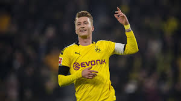

Mijn favorite club is Borussia Dortmund, het is een duitse voetbalclub dat al bestaat sinds 19 december 1909. Er werd voor Borussia gekozen als naam, volgens sommigen naar de nabijgelegen Borussiabrouwerij. De eerste successen boekte Borussia Dortmund in de jaren vijftig. Na enkele malen districtskampioen geworden te zijn, werd in 1956 in een finale tegen Karlsruher SC voor de eerste maal het landskampioenschap behaald. Dat werd een jaar later herhaald en dat nog wel met exact hetzelfde elftal dat een jaar eerder de titel won. In 1963 was Borussia de laatste Duitse landskampioen voor de invoering van de Bundesliga. In het volgende jaar werd de halve finale van de Europacup I bereikt, maar daarin werd van Internazionale verloren. In 1966 was het Europees wel raak, de Europacup II werd gewonnen tegen Liverpool.

Het eerste elftal van de club werkt zijn wedstrijden af in het Signal Iduna Park. Dortmund behoort sinds jaar en dag tot de voetbalclubs met de hoogste toeschouwersgemiddelden. In het Bundesliga-seizoen 2015/2016 vestigde Borussia Dortmund een record door 1.380.023 toeschouwers (gemiddeld 81.178 per wedstrijd) te trekken. Sinds het seizoen 1998/1999 is Borussia Dortmund de Bundesliga-club met het hoogste gemiddelde aantal toeschouwers. Per jaar verkoopt de club 55.000 seizoenskaarten. Borussia Dortmund telt bijna 900 officiële fanclubs. Bij deze fanclubs uit binnen- en buitenland zijn zo'n 60.000 fans aangesloten.
Tegenwoordig is Bayern München een rivaal van Dortmund. De wedstrijden tussen deze beide rivalen staan bekend als Der Klassiker. De club won acht landstitels en was in 1966 de eerste Duitse club die een Europese beker wist te winnen. In 1997 won de club ook de Champions League en de wereldbeker voor clubteams. Ze hebben jaarlijks het grootste supportersaantal van de wereld.